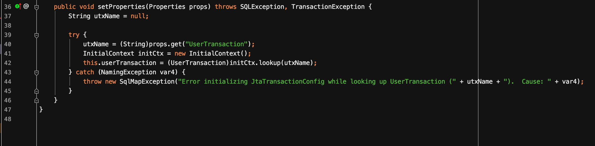
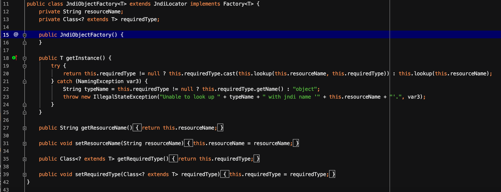
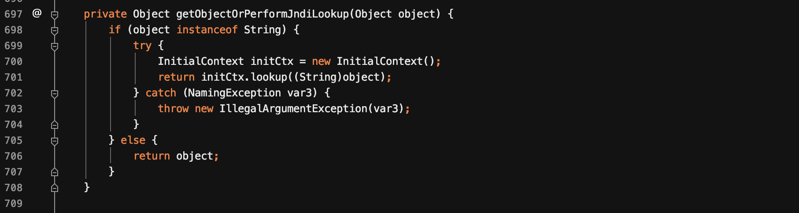
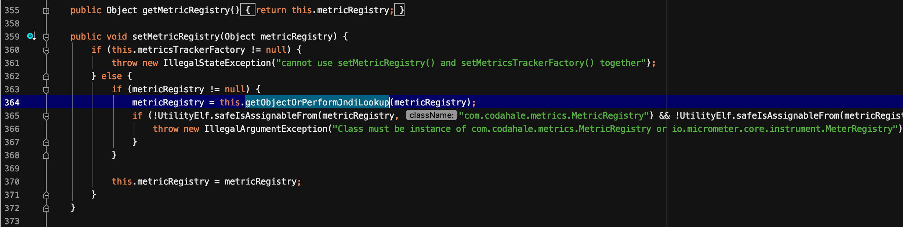
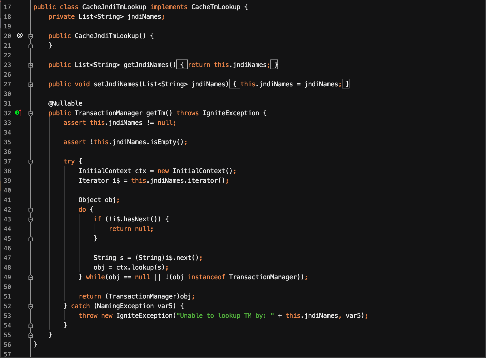

此后从1.2.48-1.2.68都是基于黑名单绕过的思路来进行利用的。此次介绍fastjson<=1.2.62版本和fastjson<=1.2.66版本的利用方式。
整个复现系列的payload放在了github上。
fastjson<=1.2.62
漏洞信息
影响版本
- fastjson <= 1.2.62
利用条件
- 开启autoType
- 依赖第三方包ibatis-sqlmap
- 依赖第三方包Jta
漏洞分析
首先定位到com.ibatis.sqlmap.engine.transaction.jta.JtaTransactionConfig类的setProperties函数

可以看到有完整的一套jndi注入，只需要考虑utxName是否可控。utxName来源于props.get(“UserTransaction”)。因此需要传入一个Properties类，其UserTransaction的值为jndi注入的uri。
EXP构造
根据上述的分析，exp构造如下:
1 | { |
补丁
补丁的方式非常的简单粗暴，就是将此类加入黑名单中。
fastjson<=1.2.66
漏洞信息
影响版本
- fastjson <= 1.2.66
利用条件
- 开启autoType
- 依赖第三方包shiro
- 依赖第三方包slf4j-simple
OR
- 开启autoType
- 依赖第三方包Anteros-DBCP
- 依赖第三方包Anteros-Core
OR
- 开启autoType
- 依赖第三方包ignite-jta-incubating
漏洞分析
JndiObjectFactory
原理分析
先定位到org.apache.shiro.jndi.JndiObjectFactory类的getInstance()函数。

这里的this.lookup事实上也是调用了JndiTemplate.lookup()函数，满足jndi注入的环境。那么就需要控制this.resourceName的值为jndi注入的uri即可。
在利用这条链时，反序列化需要使用parseObject。因为parseObject需要返回JSONObject类型的对象，在使用toJSON进行转换的时候会遍历其字段，并调用getter获取value放入Map，从而调用到了getInstance方法。
exp构造
根据上述分析，exp如下所示:
1 | { |
AnterosDBCPConfig
原理分析
首先定位到br.com.anteros.dbcp.AnterosDBCPConfig类，通过搜寻lookup函数，可以定位到其getObjectOrPerformJndiLookup()函数。

可以看到他有一个完整的JNDI注入环境。但是由于该函数是private类型，因此不能在反序列化时直接被调用，继续寻找一个调用此函数的方法。定位到setMetricRegistry()函数，如下所示:

它调用了getObjectOrPerformJndiLookup()函数。只需要将metricRegistry的值设置为jndi注入的uri值。
exp构造
1 | { |
CacheJndiTmLookup
首先定位到org.apache.ignite.cache.jta.jndi.CacheJndiTmLookup类。如下所示:

该类比较简单，在getTm()函数中存在JNDI注入的整个环境，其中jndi的uri即代码中的s来源于jndiNames，因此只需要将jndiNames中的值放入一个jndi注入的uri即可。
exp构造
1 | { |
补丁
增加黑名单。而且在1.2.68也就是最新版本中增加了新的安全参数Safe_mode。打开这个模式之后直接禁用autoType功能。虽然有这个Safe_mode，如果开启这个模式的话，相当于禁用了@type fastjson反序列化这个功能。